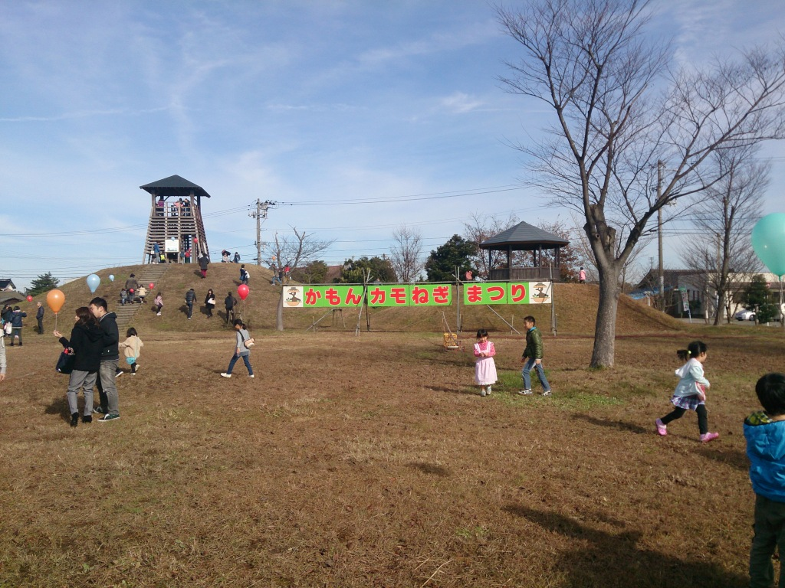
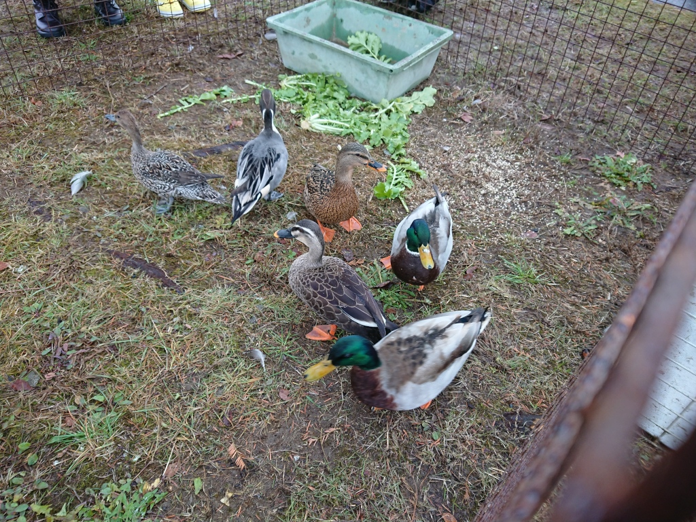
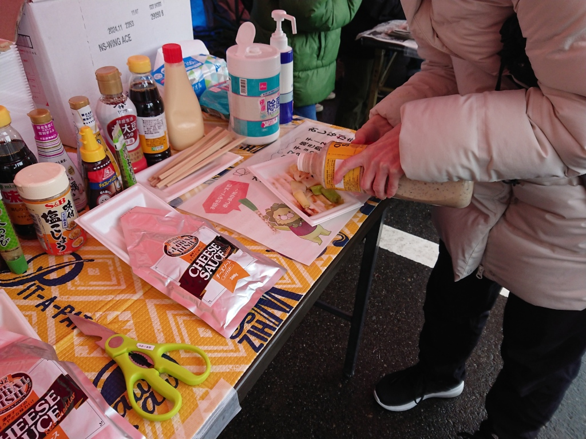
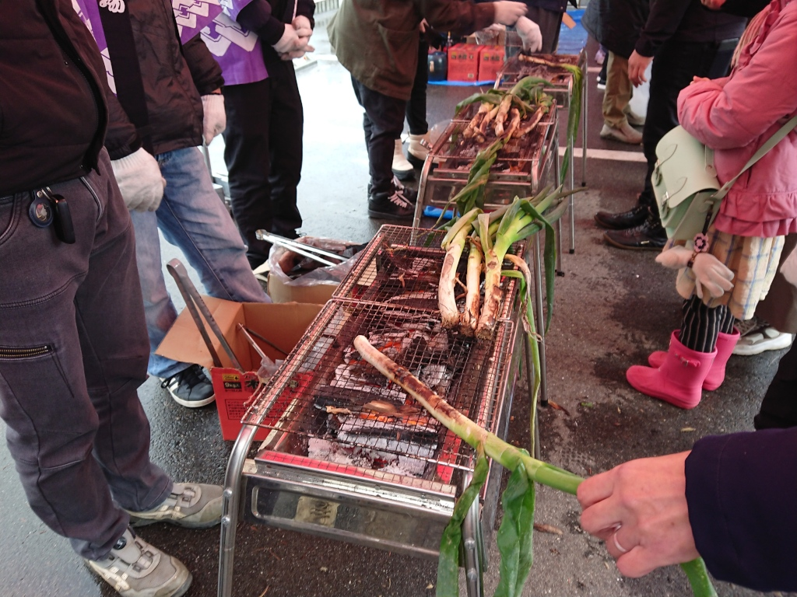
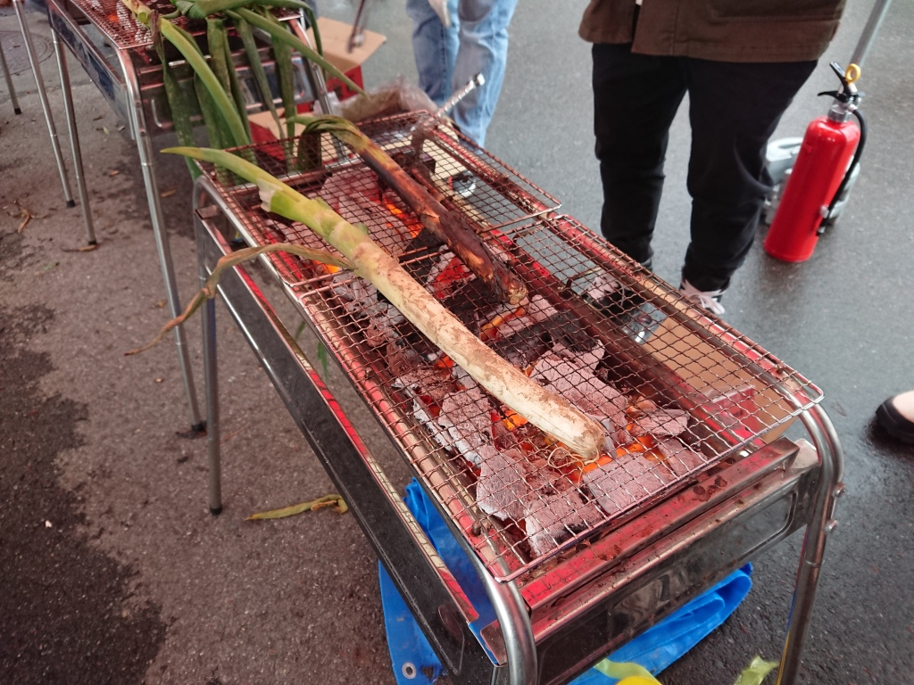
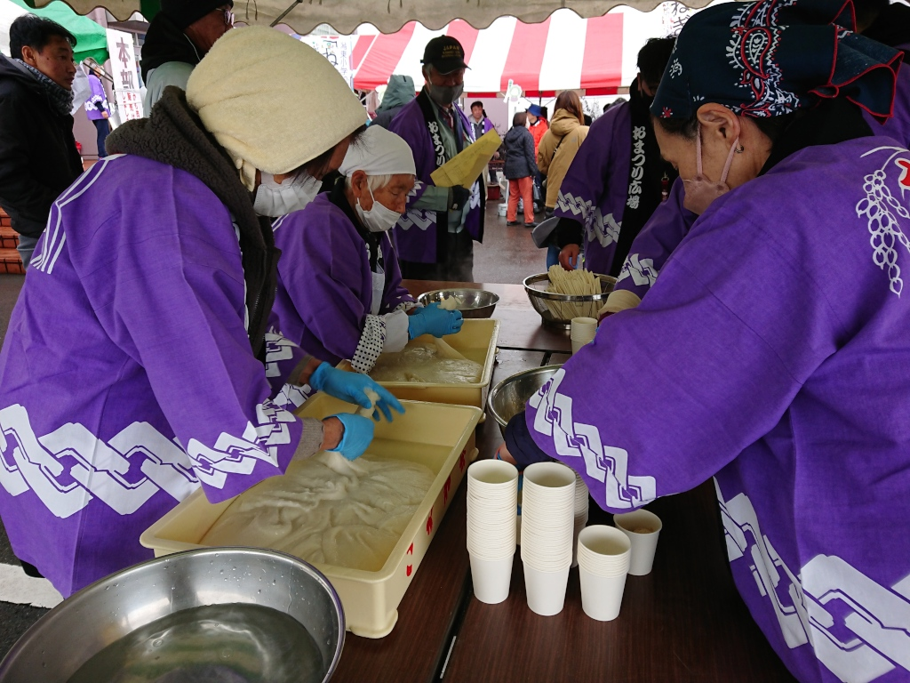
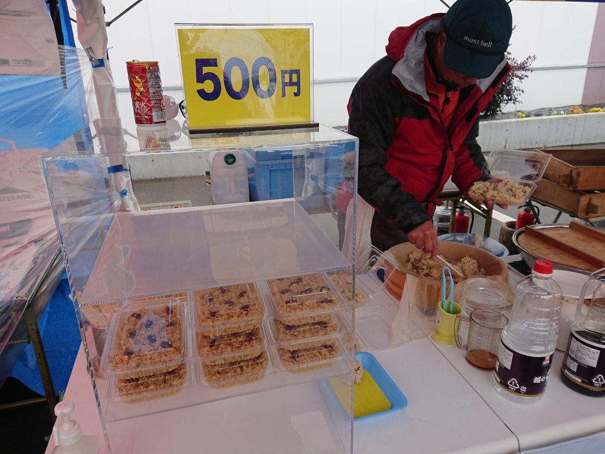
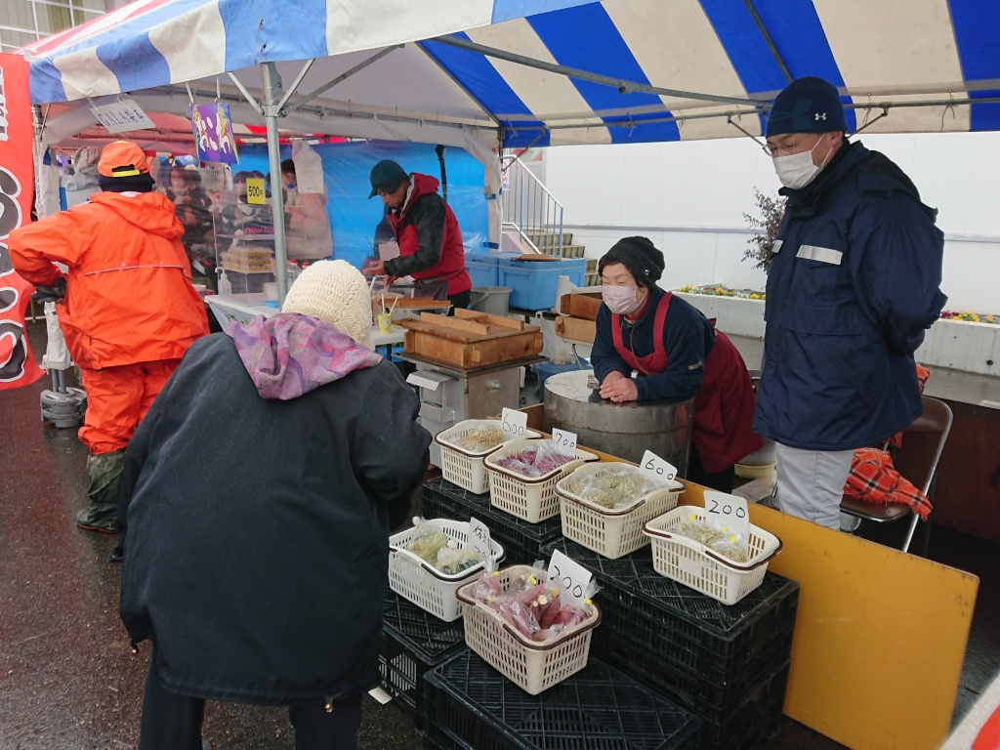
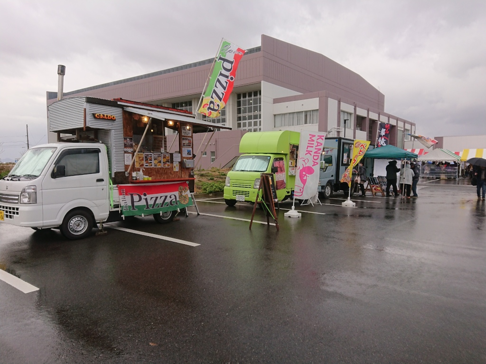
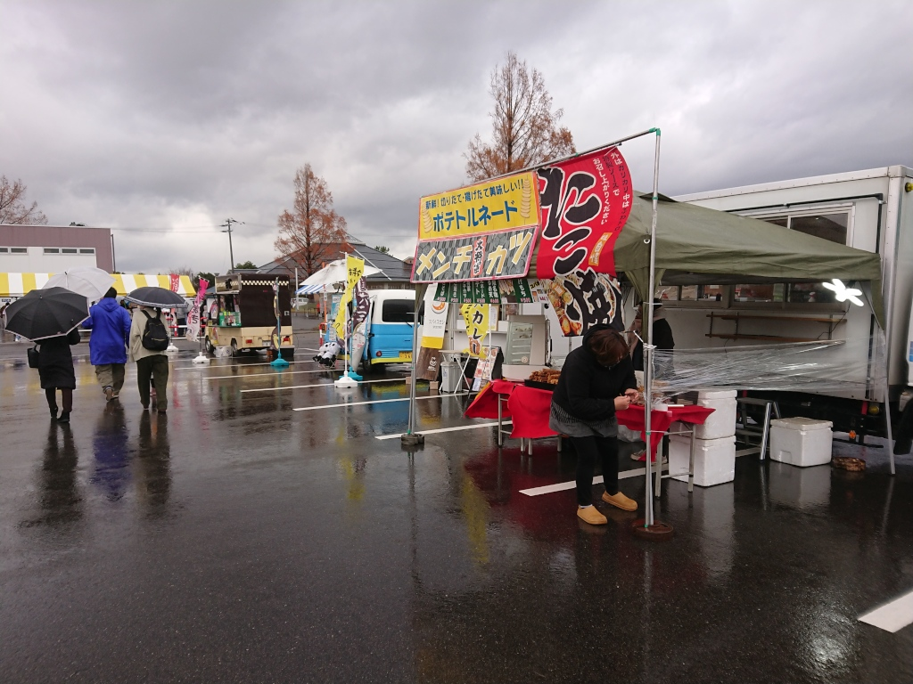

かもん！カモねぎくん
ようこそ「かもん！カモねぎくん」のページへ！
ここは、潟東地域で毎年12月に行われている「かもん！カモねぎまつり」のキャラクター「カモねぎくん」の作者が、関連する画像データ等を掲載・配布してるのサイトです。
ここで配布している画像データ等は、個人利用・商用利用を問わず、無料でご利用いただけます。
画像データ等はこちら！

かもん！カモねぎまつり
かもん！カモねぎまつりは、新潟市西蒲区潟東地域で毎年12月の第一日曜日に行われているイベントです。 ネギなどの冬野菜の販売や飲食物の販売、キッチンカーなどの出店もあります。
かもん！カモねぎまつり開催のお知らせ
- 開催日時
- 令和7年12月7日(日) 9時00分から14時00分
- 会場
- 潟東地域コミュニティセンター内及びその周辺



カモ汁レストランは800食限定、カモ汁定食はコシヒカリ御飯付きで1,000円です。
レストランは入れ替え制で、下記の時間帯となります。
- 1回目 10:00～10:50
- 2回目 11:00～11:50
- 3回目 12:00～12:50
前売りチケット販売は潟東地域コミュニティセンターで、令和7年11月7日(金曜日)より販売開始です。
- 受付時間
- 9時00分から19時00分
- 休み
- 11月10日、17日、23日、24日、12月1日
- 電話
- 0256-86-3123
今年もカモ汁券は前売り券のみです。当日券はありません。
その他、かもん！カモねぎまつりに関する最新情報は、潟東地域コミュニティ協議会のホームページかFacebookのページをご覧ください。
開催会場
潟東地域コミュニティセンター
新潟市西蒲区三方2番地
アクセス
- 公共交通
- JR越後曽根駅下車、タクシーで15分
- 車
- 北陸道巻潟東ICから国道460号経由6分
カモねぎまつりアーカイブス
広報かたひがし
平成8年(1996年)の第1回かもん！カモねぎまつりを紹介する広報かたひがし11月のページを入手しましたので掲載します。
こちらからご覧ください。
この記事でカモねぎくんは、カモねぎまつりマスコットとして紹介されています。
（なお、この記事は当時の広報かたひがしの一部を抜粋したものであり、全文ではありません。）
カモねぎまつりのチラシ
YouTube動画
過去のカモねぎまつりの様子がYouTubeにアップされています。
カモねぎまつりの様子
下の写真は2023年12月3日に開催された「かもん！カモねぎまつり2023」の様子です。














ちなみにこれはモツ汁です…